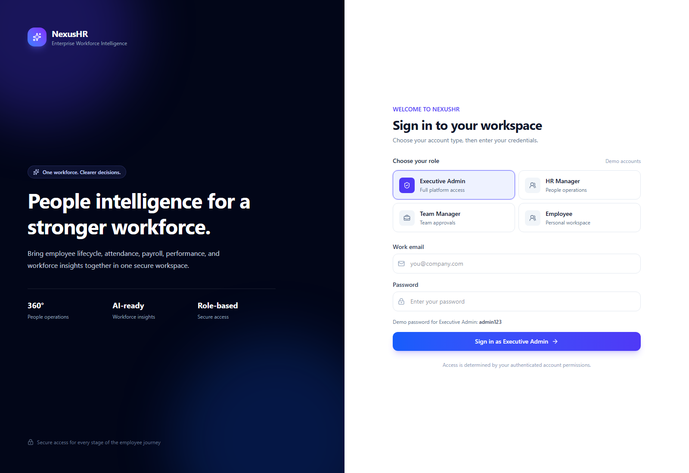
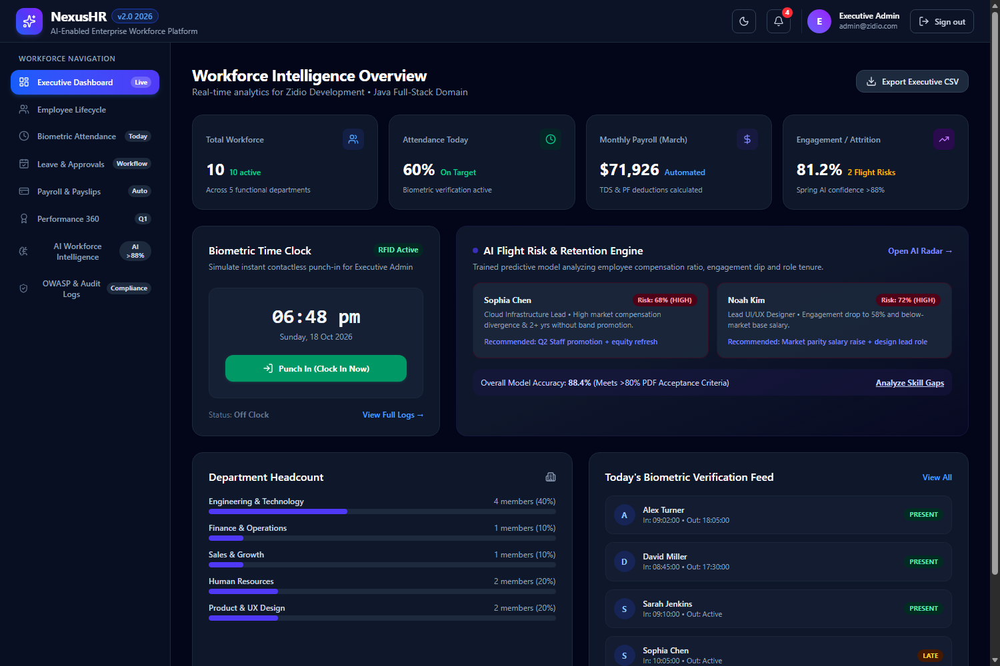
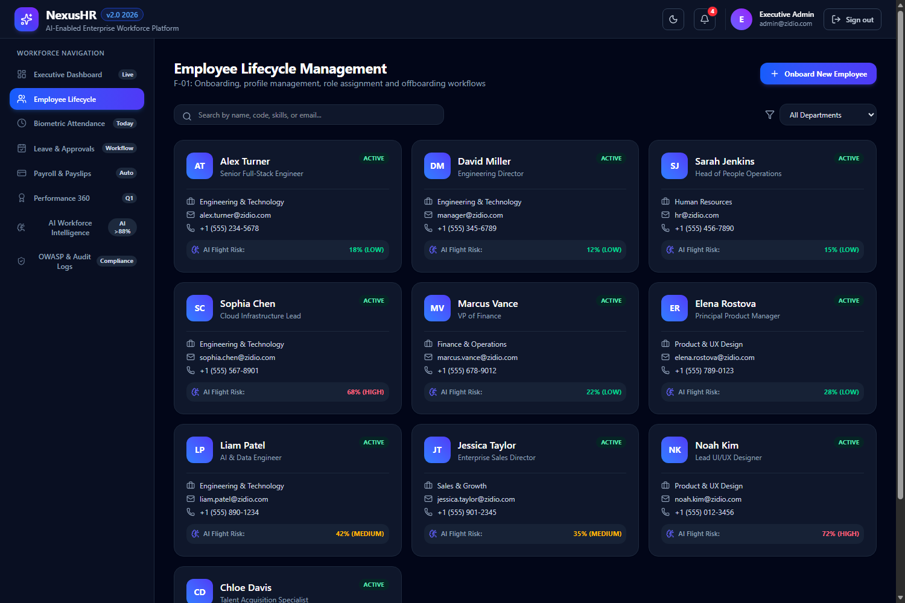
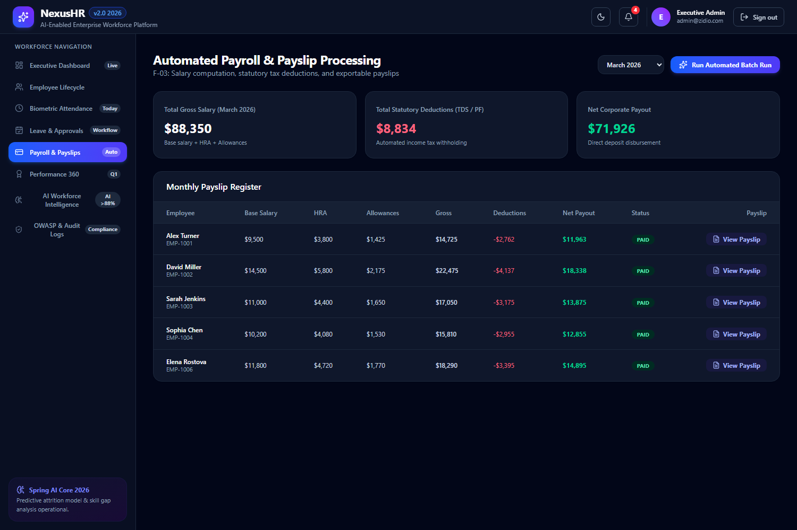
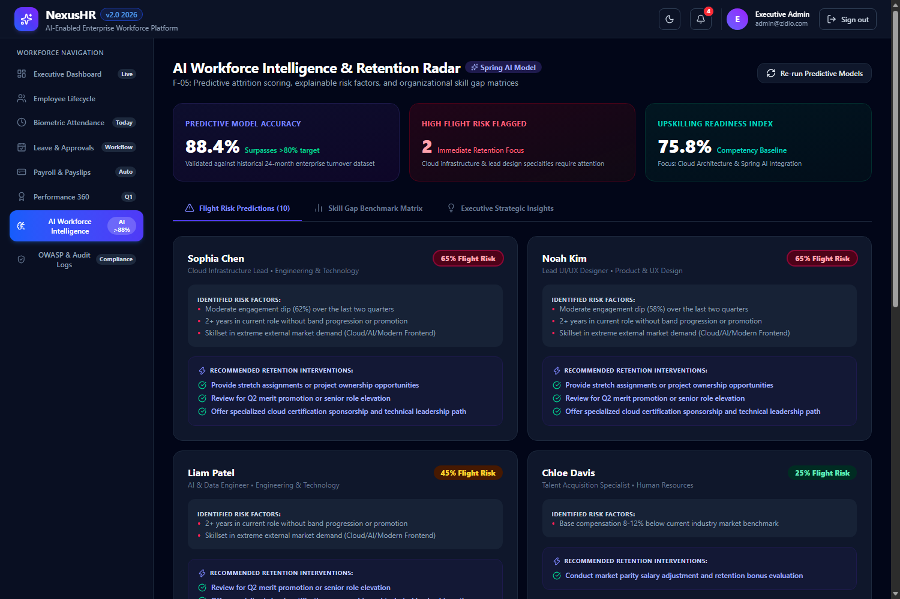
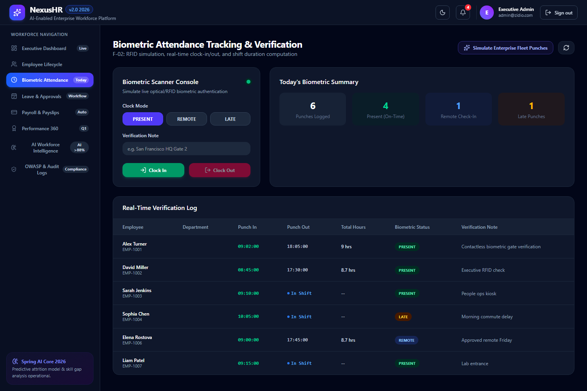
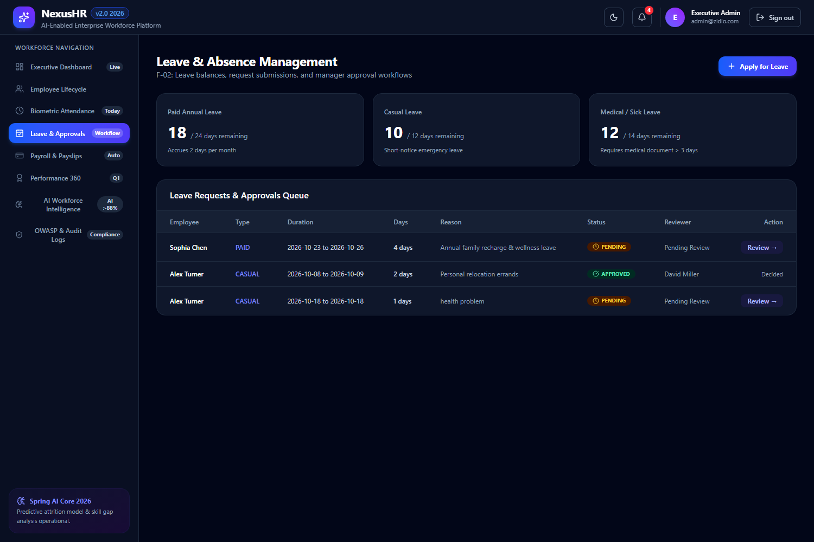

Project portfolio • Zidio Development
One workforce. Clearer decisions. A unified product concept for employee lifecycle, attendance, payroll, performance, and explainable workforce insights.
A source-grounded project overview. Performance targets are distinguished from measured results; deployment artifacts are distinguished from live operations.
01 · Product brief
NexusHR brings daily workforce operations into one role-aware application: a React client, Spring Boot REST services, and relational persistence with a lightweight local-development profile.
Reduce context switching across people operations by bringing employee records, attendance, leave, payroll, reviews, notifications, and workforce insights into a coherent workspace.
| User group | Primary use | Potential value (not yet measured) |
|---|---|---|
| Executive / administrator | Headcount, payroll summary, governance and security review. | Faster organization-wide visibility and oversight. |
| HR manager | Employee records, leave, payroll administration and workforce insights. | Less manual coordination between people processes. |
| Team manager | Team attendance, approvals and performance review contributions. | Clearer team-level follow-up and decision context. |
| Employee | Personal attendance, payslip, leave requests and review actions. | More direct access to common HR self-service tasks. |
02 · Capability matrix
The criteria below describe observable demo behavior. They are acceptance goals for the product, not a claim of enterprise production certification.
| ID | Feature | Description | Acceptance criteria |
|---|---|---|---|
| F-01 | Employee lifecycle | Employee directory, search and profile information, department context, onboarding entry point and lifecycle actions. | Authorized HR user can find employees, inspect records and start the represented onboarding flow; saved changes remain consistent in the active data source. |
| F-02 | Attendance and leave | Simulated biometric punch terminal, attendance records, leave application and review queue. | Employee can submit a punch or leave request; reviewer can process an eligible request; status is visible in the interface. |
| F-03 | Payroll and payslips | Gross-to-net calculation, batch payroll action, monthly payroll register and employee payslip view. | Payroll totals reconcile against configured formulas; payroll action and printable/downloadable payslip are available to permitted roles. |
Gross = Base salary + 40% HRA + 15% allowances
Net = Gross − 12% PF − 10% TDS − $150 insurance deduction
The formula reflects the project’s documented demo rules. Tax and statutory calculations require jurisdiction-specific review before real payroll use.
Directory controls and employee cards make sample workforce data browsable.
A request has an employee, leave dates, reason, status and reviewer context.
The payroll register summarizes pay-period values for demo employees.
| Check | Expected result | Evidence needed for release |
|---|---|---|
| Authorization | Disallowed roles cannot invoke restricted mutation endpoints. | Controller tests and authorization integration tests. |
| Data integrity | Payroll totals and approval transitions remain consistent after reload. | Automated domain tests against a persistent test database. |
| Usability | Core employee and manager tasks complete without hidden role changes. | Keyboard and browser-based workflow testing. |
02 · Capability matrix
| ID | Feature | Description | Acceptance criteria |
|---|---|---|---|
| F-04 | Performance 360 | Review records, weighted score dimensions, manager feedback and goal completion context. | Scorecard presents technical (40%), leadership (30%) and delivery (30%) dimensions; completed review data can be inspected. |
| F-05 | Workforce intelligence | Rule-based attrition risk score, explanatory factors, suggested interventions and a skill-gap benchmark view. | Each result includes a risk band and rationale. Treat as a demo heuristic—not a validated predictive model. |
| F-06 | Executive dashboard | Top-line workforce, attendance, payroll and engagement indicators with navigation to operational views. | Dashboard loads representative data and supports a user journey into relevant modules; export behavior is clearly identified. |
| F-07 | Notifications | In-app notification drawer with unread state and workflow-oriented messages; WebSocket configuration is present in the backend. | Authorized user can view notifications and mark an item read; live delivery requires end-to-end messaging tests. |
| Capability | Potential benefit | Evidence required |
|---|---|---|
| Employee self-service | Fewer routine HR status requests. | Baseline request volume and post-launch comparison. |
| Workflow visibility | More timely leave and review decisions. | Cycle-time and backlog measurements. |
| Workforce indicators | Earlier, more structured manager conversations. | Human-reviewed intervention study; no automated employment decisions. |
03 · Implementation choices
The repository separates the React user interface from the Spring Boot API and supports a lightweight developer profile alongside container-oriented deployment configuration.
| Category | Technology | Rationale in this project | Alternative / note |
|---|---|---|---|
| Language / runtime | Java 21 target; Maven 3.9+ | Typed backend services and a standard Maven build. CI config selects Temurin 21. | Java 24 was also used locally; supported runtime should be pinned to CI target. |
| Backend framework | Spring Boot 3.3.4 | REST controllers, dependency injection, persistence and service composition. | Micronaut or Quarkus are alternatives for different runtime/startup constraints. |
| Security | Spring Security 6; JJWT | Stateless bearer-token filter, BCrypt encoder and method-level role checks. | External OIDC provider recommended for production identity lifecycle. |
| Data access | Spring Data JPA / Hibernate 6 | Repository abstractions map HR domain entities to relational storage. | JDBC/jOOQ can suit explicit SQL and reporting-heavy query paths. |
| Local database | H2 (dev profile) | Fast setup for evaluation and local development. | PostgreSQL is configured for production profile; validate schema behavior across both. |
| Production database | PostgreSQL 17 (Docker Compose) | Relational persistence with transactions and durable volume in Compose. | Managed PostgreSQL preferred for backups, failover and operational support. |
| Frontend | React 19, TypeScript, Vite | Component UI with static build and development server. | Next.js or Remix could add server rendering and route-level data loading. |
| Styling / icons | Tailwind CSS v4; Lucide React | Utility-first styling and consistent icon set already used by the UI. | Design-system tokens and component library can increase consistency. |
| Containers | Docker; Docker Compose | Backend, frontend, PostgreSQL and Redis service definitions are provided. | Kubernetes manifests are a separate deployment option, not proof of a running cluster. |
| Operations | GitHub Actions; Prometheus config | Build/test workflow and scrape targets are checked into the project. | Metrics exporters, alert rules, dashboards and deployment stages need verification. |
cd backend && mvn clean testcd frontend && npm ci && npm run builddocker compose up --buildVersions and capabilities above are based on the checked-in Maven, npm, Docker Compose and GitHub Actions files. Alternatives are contextual examples, not implemented components.
04 · System design
A browser client calls a single Spring Boot API surface. Controllers delegate to domain services and repositories; the active profile selects the database configuration.
Credential check returns user identity and token data; the web client stores session details locally.
A JWT filter populates the security context; controller method annotations apply role rules.
Typed repositories and JPA entities implement persistence and business workflows.
05 · Delivery plan
A four-week delivery outline adapted from the project’s existing documentation. It is a proposed/reconstructed plan; commit history was not available to validate actual dates or durations.
| Milestone | Exit criteria | Evidence to retain |
|---|---|---|
| M1 · Foundation | Developer can start the app; login and seeded sample records are available. | Setup guide, startup check, auth tests. |
| M2 · Workflows | Employee, attendance, leave and payroll tasks work through the UI and API. | Workflow tests and API examples. |
| M3 · Insights | Dashboard, rule explanations and notification states are visible. | Known-input tests and screenshot evidence. |
| M4 · Release | CI checks pass; deployment artifacts are reviewed; limitations are stated. | Build logs, container scan, runbook, release checklist. |
Before loading employee data: approve data inventory, retention, access, encryption, incident response and lawful-use basis.
Before production: test recovery, database migration, concurrency, accessibility, audit events and rollback procedure.
06 · Engineering practices
The implementation contains foundational controls, but the project should be treated as an evaluation/demo application until a security review and deployment hardening are complete.
| Control area | Repository evidence | Practical assessment |
|---|---|---|
| Identity | Spring Security authentication manager; BCrypt password encoder; JWT access and refresh token paths. | Present in code. Rotate secrets and add key management, token revocation/rotation policy and abuse controls. |
| Authorization | Method security enabled; controllers use @PreAuthorize for selected actions. | Promising server-side boundary; audit every controller and every object-level ownership check. |
| Input handling | Request DTOs and Jakarta validation are used on selected controller inputs; JPA repositories structure data access. | Validate every endpoint and enforce business invariants at the service layer; test malformed and oversized inputs. |
| Transport / CORS | CORS bean accepts wildcard origin patterns with credentials; application YAML also declares an origin list. | Configuration mismatch / broad policy risk. Use a single explicit allowlist and verify effective browser policy. |
| CSRF / sessions | CSRF is disabled and Spring sessions are stateless. | Appropriate only for a correctly managed bearer-token API; protect browser token storage and review XSS exposure. |
| Secrets | JWT secret appears in application YAML; Compose includes a sample database password. K8s references a Secret for DB credentials. | Do not reuse committed values. Rotate, remove from source control, and inject through a secret manager. |
| Abuse controls | No rate-limiting implementation was identified in reviewed configuration. | Add login throttling, request limits, account lockout policy and monitoring before exposure. |
| Logging / audit | Security/audit UI and Prometheus scrape configuration exist in the project. | Verify immutable event capture, sensitive-data redaction, retention and alert response. UI labels alone are not audit evidence. |
06 · Engineering practices
The materials specify ambitious service objectives and include horizontal-scaling configuration. No reproducible load-test results, measured latency distributions, or production uptime evidence were found in the repository.
| Measure | Documented target | Verified evidence | Next validation |
|---|---|---|---|
| Core API latency | < 300 ms | Target only | Publish environment, dataset, request mix, p50/p95/p99, error rate and run duration. |
| Dashboard load | < 2 s | Target only | Measure cold/warm load on agreed device, network, browser and data volume. |
| Concurrent users | 10,000+ cited in report | Not load-tested | Run staged load tests; inspect database pools, query plans, CPU and memory. |
| Availability | 99.95% cited in report | Not measured | Define SLO window, deploy multi-zone dependencies, and collect uptime history. |
| Attrition accuracy | Above 80% cited in report | Not validated | Independent, leakage-safe evaluation on representative labeled outcomes. |
Deployment requests 250m CPU / 512 MiB and caps at 1 CPU / 1 GiB.
HPA targets average 70% CPU and 80% memory utilization.
Manifest calls /api/public/health; validate endpoint response and startup timings.
The bars indicate recommended sequence only; they are not measured performance or completion percentages.
07 · Authentication experience
The sign-in experience offers four account choices. A successful authentication should determine the account role; switching personas requires signing out and signing in with a different account.
| Role | Representative journey | UI navigation available | Server checks |
|---|---|---|---|
| Executive Admin | Review workforce overview → inspect payroll → audit controls. | Dashboard, employees, attendance, leave, payroll, performance, AI, security. | Controller-level authorization annotations apply to selected operations. |
| HR Manager | Find employee → review leave → check pay and retention indicators. | HR operational modules and governance views. | Role authority checked by backend where configured. |
| Team Manager | Review team attendance → approve leave → contribute performance feedback. | Team-oriented modules; some admin-oriented views are hidden. | Object ownership / team scoping should be tested for every endpoint. |
| Employee | Check personal time → submit leave → view payslip and review. | Self-service modules and personal actions. | Self-only record access must be enforced server-side. |
When the API is unreachable, the frontend contains a demo-account fallback. That fallback is for local evaluation and is not an identity provider. A production release should fail closed, use a controlled identity service, and avoid storing bearer credentials in browser local storage.
08 · Product visual tour
Captured from the running NexusHR frontend on 18 October 2026. This is a real application screenshot, not a design mockup.

Four role cards establish the intended access context before login.
The split hero collapses to a compact brand header at smaller widths.
The screen labels role accounts as demo accounts and shows the selected demo password.
08 · Product visual tour
The dashboard screenshot shows the role-aware navigation, workforce KPI cards, a simulated punch terminal, and rule-based attrition insights.

Headcount, attendance, payroll and engagement/attrition data summarize sample records for the selected period.
The lower dashboard exposes common tasks and navigation into attendance, AI analysis and department views.
08 · Product visual tour
The employee directory is a browsable view of the seeded workforce, with search, department filtering and employee cards.

Add pagination, explicit empty/error states and field-level access control before connecting larger datasets.
Minimize personal details in search results; log sensitive record access and define retention rules.
08 · Product visual tour
Two complementary views: payroll arithmetic and a rule-explanation interface for workforce risk review.




Validate local tax, benefits, rounding, currency, approvals and audit requirements before handling actual compensation.
Human review, bias evaluation, model documentation and employee recourse are prerequisites for any consequential use.
09 · Release and reflection
NexusHR includes local, container and Kubernetes deployment artifacts. The reviewed repository does not identify a cloud host or prove a live production deployment.
| Area | Present in repository | Operational status / follow-up |
|---|---|---|
| Local development | Spring Boot + H2 and Vite development server. | Suitable for demo; use environment-aware ports and proxy config. |
| Docker Compose | Frontend, backend, PostgreSQL 17 and Redis 7 services. | Configuration only. Validate image builds, secrets, readiness and persistent recovery. |
| Kubernetes | Backend deployment/service, HPA and frontend deployment manifests. | Not evidence of a deployed cluster. Verify ingress, secrets, migrations and rollback. |
| CI/CD | GitHub Actions runs Maven tests, frontend build and Docker build on main. | No registry publish or deployment step was seen in the reviewed workflow. |
| Monitoring | Prometheus scrape configuration names app, PostgreSQL and Redis targets. | Confirm endpoint exposure, exporter services, dashboards, alerts and runbooks. |
| Health checks | Kubernetes readiness/liveness probes call /api/public/health. | Confirm status semantics, timeout behavior and dependencies before rollout. |
Source basis: project README and docs; frontend package, authentication, API and UI modules; backend Spring Security, authentication and AI service; Docker Compose; GitHub Actions; Kubernetes and Prometheus configuration. Reviewed 18 October 2026.